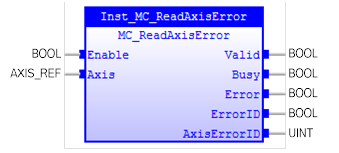

MC_ReadAxisError
Gets general axis errors not relating to the Function Blocks.

Description:
This Function Block presents general axis errors not relating
to the Function Blocks, such as
axis errors
,
drive errors, communication errors.
For details of ‘AxisErrorID’ output, please refer to
Axis Errors
.
This Function Block does not affect the PLCopen state
machine.
Make sure the input and output parameters are of data type
indicated in the table below.
Inputs/Outputs:
|
Name
|
Data Type
|
Description
|
|
INPUTS
|
|
Enable
|
BOOL
|
Get the axis information constantly
while enabled
|
|
Axis
|
AXIS_REF
|
Reference to the axis
|
|
OUTPUTS
|
|
Valid
|
BOOL
|
TRUE if
a valid output is available
|
|
Busy
|
BOOL
|
The
FB is not finished and new output values are to be expected
|
|
Error
|
BOOL
|
Signals
that an error has occurred within the FB
|
|
ErrorID
|
UINT
|
Error
identification
|
|
AxisErrorID
|
UINT
|
The
value of the
axis errors
|
Examples:
Example 1:
|
 Example
Example
|
|
(*Example for
MC_ReadAxisError *)
inst_ReadAxisError( Axis := Axis0Ref, Enable := bEnable );
bValid:= inst_ReadAxisError.Valid;
bBusy := inst_ReadAxisError.Busy;
bError := inst_ReadAxisError.Error;
ErrorId := inst_ReadAxisError.ErrorID;
IF
bValid
THEN
AxisErrorId := inst_ReadAxisError.AxisErrorID;
END_IF
;
|
See also:
Error Handling
,
Axis Errors